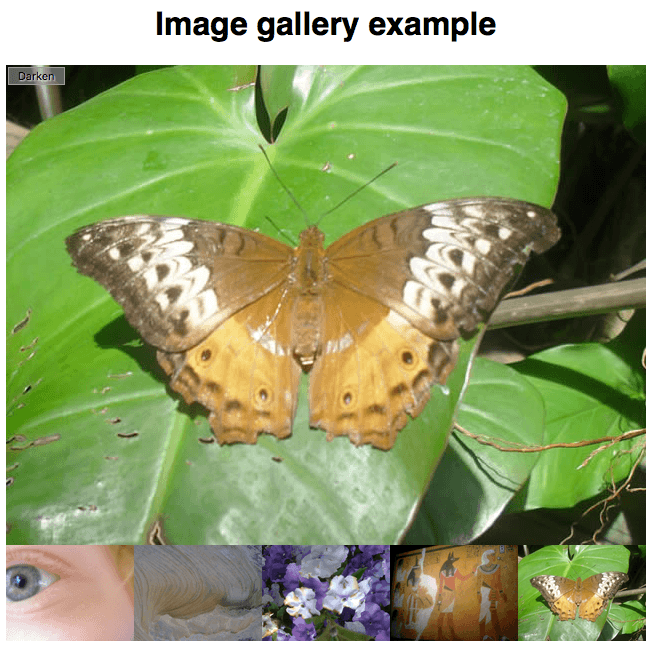

Now that we've looked at the fundamental building blocks of JavaScript, we'll test your knowledge of loops, functions, conditionals and events by getting you to build a fairly common item you'll see on a lot of websites — a JavaScript-powered image gallery.
| Prerequisites: | Before attempting this assessment you should have already worked through all the articles in this module. |
|---|---|
| Objective: | To test comprehension of JavaScript loops, functions, conditionals, and events. |
To get this assessment started, you should go and grab the ZIP file for the example, unzip it somewhere on your computer, and do the exercise locally to begin with.
Alternatively, you could use a site like JSBin or Glitch to do your assessment. You could paste the HTML, CSS and JavaScript into one of these online editors. If the online editor you are using doesn't have separate JavaScript/CSS panels, feel free to put them inline <script>/<style> elements inside the HTML page.
Note: If you get stuck, then ask us for help — see the {{anch("Assessment or further help")}} section at the bottom of this page.
You have been provided with some HTML, CSS and image assets and a few lines of JavaScript code; you need to write the necessary JavaScript to turn this into a working program. The HTML body looks like this:
<h1>Image gallery example</h1> <div class="full-img"> <img class="displayed-img" src="images/pic1.jpg"> <div class="overlay"></div> <button class="dark">Darken</button> </div> <div class="thumb-bar"> </div>
The example looks like this:

The most interesting parts of the example's CSS file:
full-img <div> — the <img> in which the full-sized image is displayed, an empty <div> that is sized to be the same size as the <img> and put right over the top of it (this is used to apply a darkening effect to the image via a semi-transparent background color), and a <button> that is used to control the darkening effect.thumb-bar <div> (so-called "thumbnail" images) to 20%, and floats them to the left so they sit next to one another on a line.Your JavaScript needs to:
<img> element inside the thumb-bar <div> that embeds that image in the page.onclick handler to each <img> inside the thumb-bar <div> so that when they are clicked, the corresponding image is displayed in the displayed-img <img> element.onclick handler to the <button> so that when it is clicked, a darken effect is applied to the full-size image. When it is clicked again, the darken effect is removed again.To give you more of an idea, have a look at the finished example (no peeking at the source code!)
The following sections describe what you need to do.
We've already provided you with lines that store a reference to the thumb-bar <div> inside a constant called thumbBar, create a new <img> element, set its src attribute to a placeholder value xxx, and append this new <img> element inside thumbBar.
You need to:
xxx placeholder value with a string that will equal the path to the image in each case. We are setting the value of the src attribute to this value in each case. Bear in mind that in each case, the image is inside the images directory and its name is pic1.jpg, pic2.jpg, etc.In each loop iteration, you need to add an onclick handler to the current newImage — this handler should find the value of the src attribute of the current image. Set the src attribute value of the displayed-img <img> to the src value passed in as a parameter.
Alternatively, you can add one event listener to the thumb bar.
That just leaves our darken/lighten <button> — we've already provided a line that stores a reference to the <button> in a constant called btn. You need to add an onclick handler that:
<button> — you can again achieve this by using getAttribute()."dark", changes the <button> class to "light" (using setAttribute()), its text content to "Lighten", and the {{cssxref("background-color")}} of the overlay <div> to "rgba(0,0,0,0.5)"."dark", changes the <button> class to "dark", its text content back to "Darken", and the {{cssxref("background-color")}} of the overlay <div> to "rgba(0,0,0,0)".The following lines provide a basis for achieving the changes stipulated in points 2 and 3 above.
btn.setAttribute('class', xxx);
btn.textContent = xxx;
overlay.style.backgroundColor = xxx;
If you would like your work assessed, or are stuck and want to ask for help:
{{PreviousMenu("Learn/JavaScript/Building_blocks/Events", "Learn/JavaScript/Building_blocks")}}